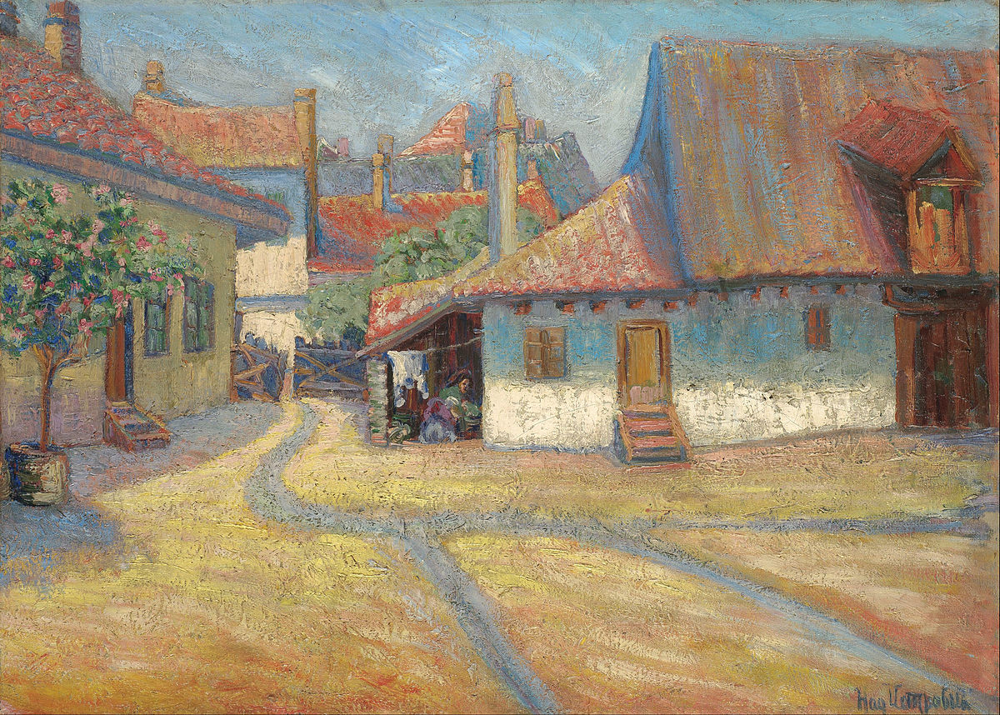

Стари Београд - Дорћол
Цртеж "Стари Београд - Дорћол" је, укратко речено,
magnum opus српског импресионизма. Откривен је као један од
укупно 36 различитих цртежа на Надеждиној другој соло изложби
у Љубљани марта 1910. године. Овај цртеж се тренутно налази у
галерији војног музеја у Београду и чак су очуване налепнице
за број цртежа и цену у динарима. Цртеж број 4 је тада вредео
2000 динара (што је око 80 000 у данашњем новцу).